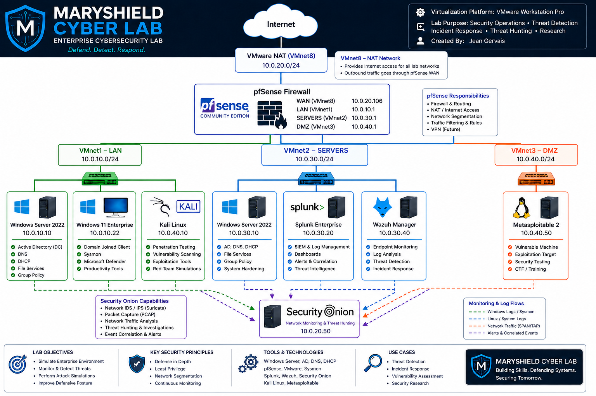

Enterprise Cyber Lab
The MaryShield Cyber Lab is a fully virtualized enterprise cybersecurity environment designed to simulate real-world corporate networks. It provides hands-on experience with system administration, network security, threat detection, SIEM technologies, incident response, and defensive security operations.
Enterprise Network Architecture

Overview
The laboratory consists of multiple virtual machines connected through segmented virtual networks using VMware Workstation. Each system performs a specific enterprise function, allowing realistic attack simulations and defensive monitoring.
Virtual Infrastructure
| Virtual Machine | Purpose |
|---|---|
| Windows Server 2022 | Domain Controller, DNS, DHCP, Active Directory |
| Windows 11 Enterprise | Enterprise Workstation |
| Ubuntu Server | Linux Administration |
| Splunk Enterprise | SIEM Platform |
| Security Onion | Network Security Monitoring |
| Wazuh | Endpoint Detection & Response |
| Kali Linux | Penetration Testing |
| Metasploitable | Vulnerable Target Machine |
| pfSense | Firewall & Routing |
Security Stack
- VMware Workstation Pro
- Windows Server 2022
- Windows 11 Enterprise
- Ubuntu Linux
- Kali Linux
- Splunk Enterprise
- Security Onion
- Wazuh
- Sysmon
- Active Directory
- DNS
- DHCP
- pfSense Firewall
IP Addressing Plan
| System | Address |
|---|---|
| Windows Server 2022 | 10.0.10.10 |
| Windows 11 | 10.0.10.22 |
| Kali Linux | 10.0.10.50 |
| Ubuntu Server | 10.0.30.20 |
| Splunk Enterprise | 10.0.30.30 |
| Wazuh | 10.0.30.40 |
| Metasploitable | 10.0.40.50 |
Monitoring and Logging
Windows systems generate Security Event Logs and Sysmon telemetry, which are forwarded to Splunk Enterprise for centralized log analysis. Wazuh agents provide endpoint monitoring and security analytics, while Security Onion captures and analyzes network traffic for intrusion detection and threat hunting. Together, these tools provide layered visibility into endpoint activity and network behavior.
Future Enhancements
- Kerberoasting Detection
- Pass-the-Hash Detection
- Golden Ticket Detection
- MITRE ATT&CK Mapping
- Sigma Rules
- YARA Detection Rules
- Threat Hunting Dashboards
- Automated Incident Response